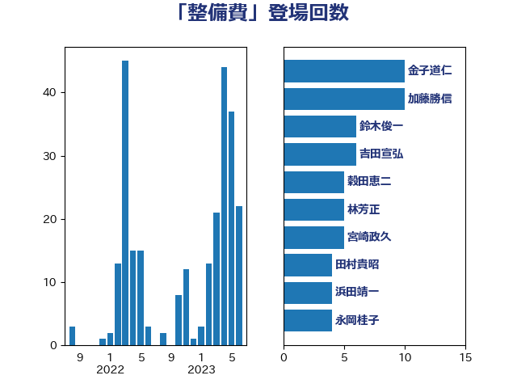

単語「整備費」

| 岸信夫 | 自由民主党 | 10 回 |
| 井上哲士 | 日本共産党 | 8 回 |
| 吉田宣弘 | 公明党 | 6 回 |
| 萩生田光一 | 自由民主党 | 6 回 |
| 宮崎政久 | 自由民主党 | 5 回 |
| 林芳正 | 自由民主党 | 5 回 |
| 穀田恵二 | 日本共産党 | 5 回 |
| 大塚耕平 | 国民民主党 | 4 回 |
| 後藤茂之 | 自由民主党 | 4 回 |
| 末松信介 | 自由民主党 | 4 回 |
| 野上浩太郎 | 自由民主党 | 4 回 |
| 竹内真二 | 公明党 | 3 回 |
| こやり隆史 | 自由民主党 | 2 回 |
| 御法川信英 | 自由民主党 | 2 回 |
| 徳永久志 | 立憲民主党 | 2 回 |
| 浜地雅一 | 公明党 | 2 回 |
| 田島麻衣子 | 立憲民主党 | 2 回 |
| 田村憲久 | 自由民主党 | 2 回 |
| 美延映夫 | 日本維新の会 | 2 回 |
| 菊田真紀子 | 立憲民主党 | 2 回 |
| 赤羽一嘉 | 公明党 | 2 回 |
| 重徳和彦 | 立憲民主党 | 2 回 |
| 青山大人 | 立憲民主党 | 2 回 |
| 三木亨 | 自由民主党 | 1 回 |
| 上田清司 | 国民民主党 | 1 回 |
| 中川宏昌 | 公明党 | 1 回 |
| 中曽根康隆 | 自由民主党 | 1 回 |
| 伊波洋一 | 無所属 | 1 回 |
| 加藤竜祥 | 自由民主党 | 1 回 |
| 勝目康 | 自由民主党 | 1 回 |
| 吉川沙織 | 立憲民主党 | 1 回 |
| 吉田久美子 | 公明党 | 1 回 |
| 坂本哲志 | 自由民主党 | 1 回 |
| 城井崇 | 立憲民主党 | 1 回 |
| 堀内詔子 | 自由民主党 | 1 回 |
| 塩田博昭 | 公明党 | 1 回 |
| 大串博志 | 立憲民主党 | 1 回 |
| 小林鷹之 | 自由民主党 | 1 回 |
| 小池晃 | 日本共産党 | 1 回 |
| 小里泰弘 | 自由民主党 | 1 回 |
| 山本博司 | 公明党 | 1 回 |
| 山添拓 | 日本共産党 | 1 回 |
| 斉藤鉄夫 | 公明党 | 1 回 |
| 本村伸子 | 日本共産党 | 1 回 |
| 杉本和巳 | 日本維新の会 | 1 回 |
| 武部新 | 自由民主党 | 1 回 |
| 江田憲司 | 立憲民主党 | 1 回 |
| 田村貴昭 | 日本共産党 | 1 回 |
| 盛山正仁 | 自由民主党 | 1 回 |
| 福重隆浩 | 公明党 | 1 回 |
| 篠原豪 | 立憲民主党 | 1 回 |
| 羽田次郎 | 立憲民主党 | 1 回 |
| 茂木敏充 | 自由民主党 | 1 回 |
| 西岡秀子 | 国民民主党 | 1 回 |
| 谷川とむ | 自由民主党 | 1 回 |
| 近藤和也 | 立憲民主党 | 1 回 |
| 遠藤良太 | 日本維新の会 | 1 回 |
| 酒井庸行 | 自由民主党 | 1 回 |
| 鬼木誠 | 立憲民主党 | 1 回 |